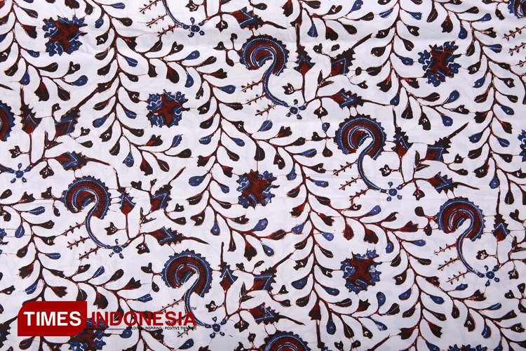
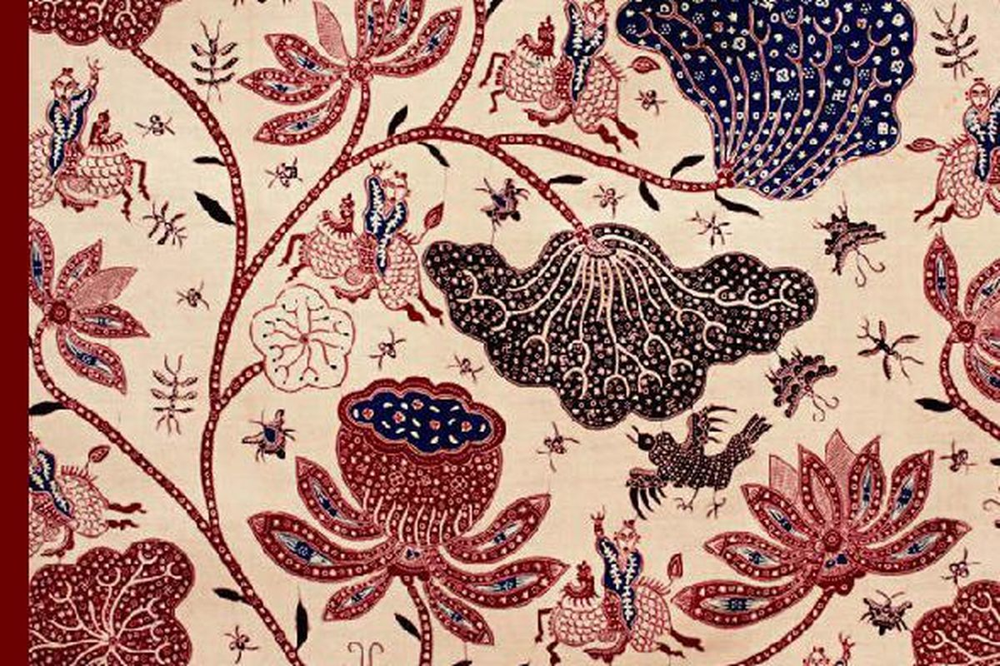
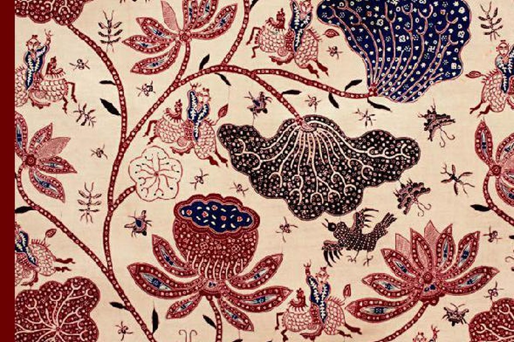

Batik Jawa Timur
Motif Gajah Oling merupakan ikon batik khas Banyuwangi yang sangat melekat pada budaya masyarakat Osing. Nama "Gajah Oling" berasal dari kata "Gajah" yang melambangkan kekuatan, kebijaksanaan, serta keteguhan hati, dan kata "Oling" dari kata Jawa "eling" yang berarti ingat. Motif ini mengandung filosofi agar manusia selalu ingat kepada Tuhan, tidak lupa diri, dan tetap berada di jalan kebaikan.
Bentuk lengkung yang mirip belalai gajah menggambarkan keluwesan, keharmonisan, dan keseimbangan hidup. Motif ini sering digunakan dalam berbagai upacara adat suku Osing sebagai simbol perlindungan spiritual. Warnanya yang tegas mencerminkan karakter kuat masyarakat Banyuwangi.

 
